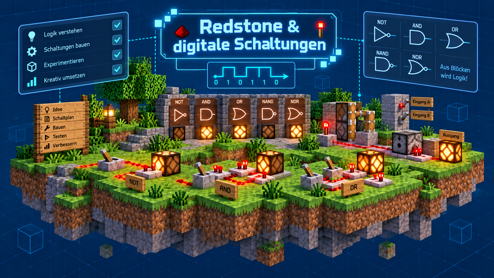

Einführung
Redstone ist eine der wichtigsten Mechaniken in Minecraft und verbindet das Spiel mit den Ideen digitaler Logik. In der AG lernen wir, wie Schalter, Lampen, Wiederholer und andere Bauteile zusammenarbeiten und wie wir daraus kleine Schaltungen und automatische Systeme bauen.
Mit Redstone lassen sich unter anderem:
- einfache Lampen, Türen und Fallen schalten
- Signale verstärken, verzögern und weiterleiten
- Schaltkreise mit Logik bauen
- Maschinen und automatisierte Prozesse gestalten
- eigene technische Konzepte in einer Welt umsetzen
Dabei erkennen wir schnell, dass Redstone sehr ähnlich zu elektrischen Schaltungen arbeitet. Durch das Bauen von Steckern, Schaltern und Logikgattern lernen wir grundlegende Prinzipien digitaler Technik kennen.

Grundlagen
- Redstone-Leitung und Redstone-Staub
- Schalter, Taster und Druckplatten
- Redstone-Lampen, Wiederholer und Komparatoren
- Verzögerungen, Verstärkungen und Signalfluss
- Motorik mit Pistons, Schleusen und Förderanlagen
Digitale Schaltungen
Wir beschäftigen uns mit grundlegenden digitalen Bausteinen wie:
- NOT-Gatter
- AND-Gatter
- OR-Gatter
- NAND-Gatter
- NOR-Gatter
- XOR-Gatter und Erweiterungen
Diese Schaltungen helfen uns, Logik in Minecraft zu verstehen und aus einzelnen Redstone-Elementen komplexere Systeme zu bauen.
Beispiele aus der AG
- einfache Lichtschalter und automatische Türen
- Mehrfachschaltungen mit logischen Bedingungen
- Selbststeuernde Anlagen und Sicherheitsmechaniken
- kleine Maschinen zur Materialförderung und Sortierung